On the Efficiency of Tempering Algorithms
2026 OCEAN Retreat — Durham, UK
University of Warwick
This work is joint with
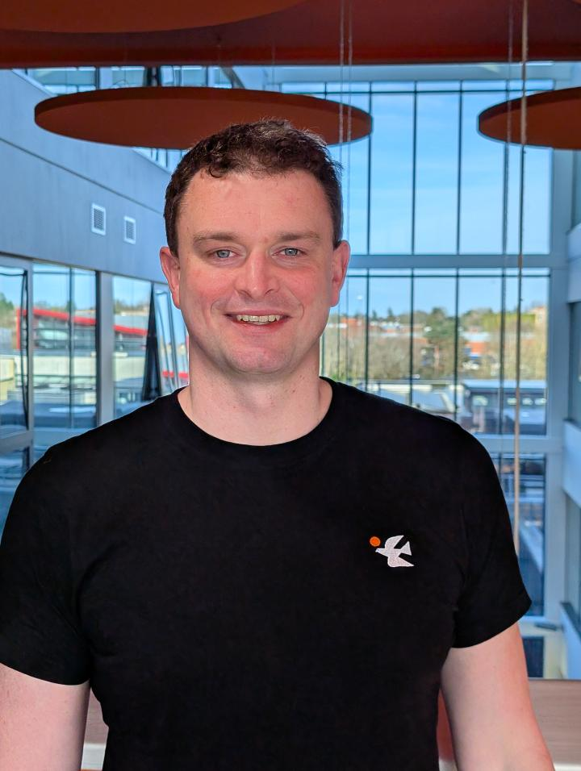
Nicholas G. Tawn University of WarwickStochastic Simulation
Problem: sample from a \(d\)-dimensional target
\[ \pi(x)=\frac{\gamma(x)}{\mathcal Z}, \]
known up to \(\mathcal Z\), where \(\gamma\) can be evaluated pointwise.
Markov chain Monte Carlo (MCMC):
- Construct a Markov chain \(\{X_t:t\geq0\}\) with transition kernel \(P\) satisfying \(\pi P=\pi\).
MCMC typically fails in the presence of Multimodality
A running example, a simple Mixture of two Gaussian distributions : \[ \pi({\bf x}) = p\,\mathrm{N}\!\left({\bf x};m,\, \sigma^2 I_d\right) + (1-p)\,\mathrm{N}\!\left({\bf x}; -m,\, \sigma^2 I_d\right) \]
Python — click to roll up / down
Well-tuned MALA,
and still
\(\Rightarrow\) trapped in
one mode
Outline
- Introduction — The Simulated Tempering Algorithm
- Reversible temperature moves
- Non-reversible temperature moves
- Numerical Experiments
- Takeaways & Future Work
Introduction – Simulated Tempering
Tempering: Lift the barriers
\[ \text{Introduce an} \textbf{ inverse-temperature } \color{purple}{\beta} : \qquad \pi_{\color{purple}{\beta}}(x)\propto\pi(x)^{\color{purple}{\beta}}, \qquad \color{purple}{\beta}\in(0,1]. \]
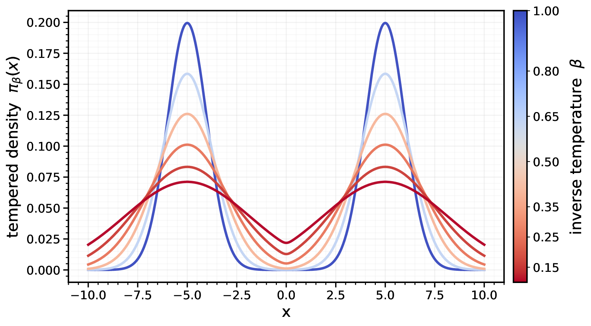
Cold target (\(\beta=1\)) and warmer distributions (\(\beta\ll1\)).
Multiple Targets
Simulated Tempering : A Metropolis-within-Gibbs scheme
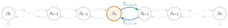
- Within-temperature move: any kernel (RWM, MALA, HMC, etc) that leaves \(\pi_{\beta_k}\) invariant.
- Between-temperature move: a kernel \(T\) that updates \(\beta\).
Simulated Tempering : A Metropolis-within-Gibbs scheme
Within-temperature move: any kernel (RWM, MALA, HMC, etc) that leaves \(\pi_{\beta_k}\) invariant.
Between-temperature move: a kernel \(T\) that updates \(\beta\).
Problem: How do we choose the intermediate distributions?
Reversible Temperature Moves
Optimal Scaling in a Tempering Setting [ARR11]
When \(d\to\infty\), to maintain a non-degenerate algorithm : \[ |\beta_i-\beta_{i+1}|\sim \color{#FF8C00}{\ell} \,/\sqrt{\color{#2980B9}{d}} \]
How do we choose \(\color{#FF8C00}{\ell}\)?
Towards Smarter Temperature Moves
Original construction [GT95] is the simple Random Walk [MRR+53] :
\[ T_{k,k\pm 1} = \color{#c62828}{\frac{1}{2}} \min \biggl\{ 1, \frac{\pi_{\color{#6a1b9a}{\beta_{k \pm 1}}}(x)}{\pi_{\beta_{k}}(x)} \biggr\}. \]
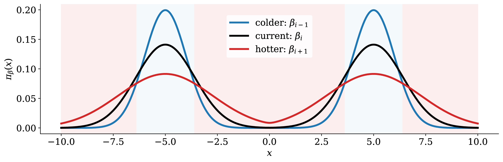
Informed Proposals yield higher acceptance [Zan20; QRT26+]
\[ q_f(\color{red}{\beta_k} \to \color{blue}{\beta_j}) \propto f\left(\frac{\pi_{\color{blue}{\beta_j}}(\color{green}{x})}{\pi_{\color{red}{\beta_k}}(\color{green}{x})}\right) \]
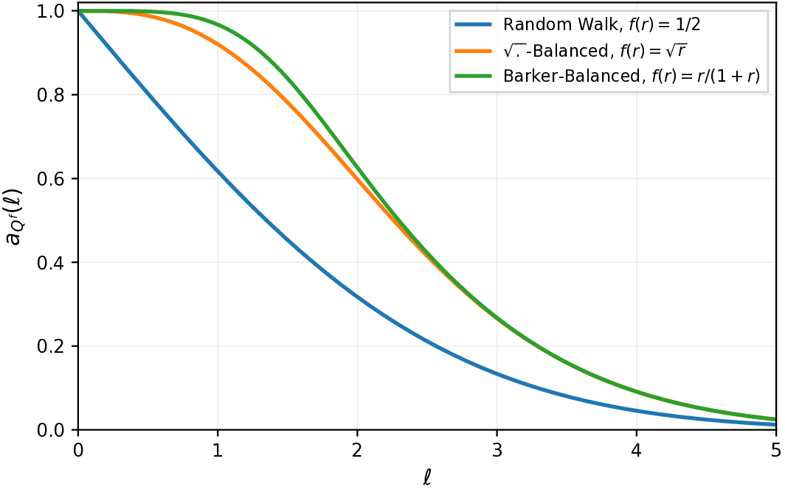
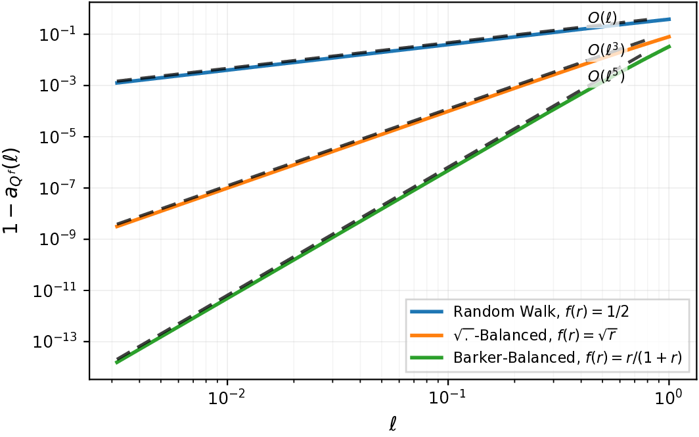
Efficiency Gains from Informed Proposals [QRT26+]
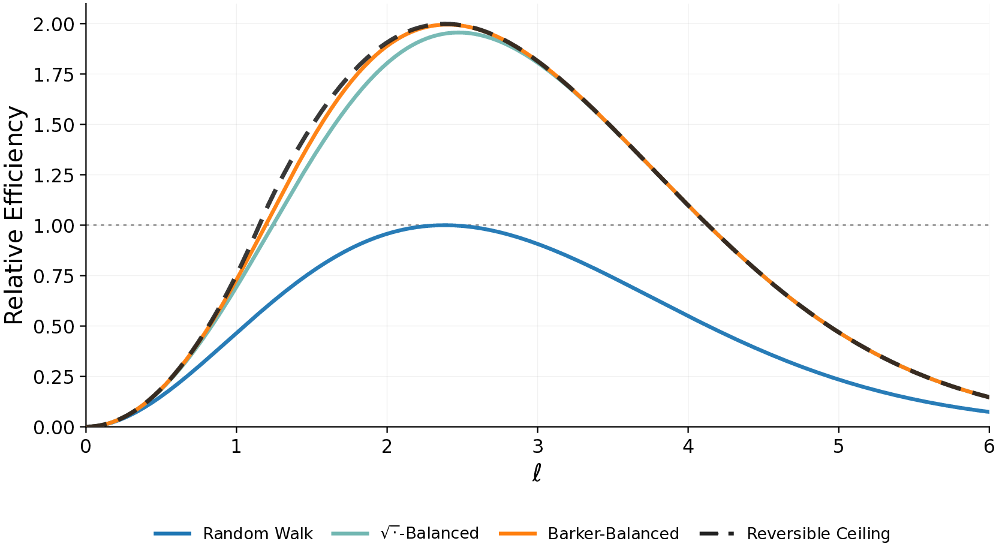
Non-Reversible Temperature Moves
Can we force a direction?
- Key idea: Favour one direction. The chain is momentum-driven and non-reversible.
- Momentum flips must be designed [SH16].
“Lifting” [CLP99; DHN00]
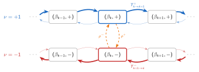
Efficiency Metric [RR25; QRT26+]
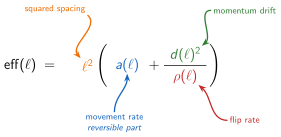
Guided Walk Metropolis [Gus98; BCB25]
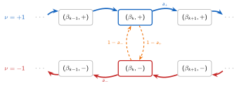
Guided Walk vs Top Reversible Methods
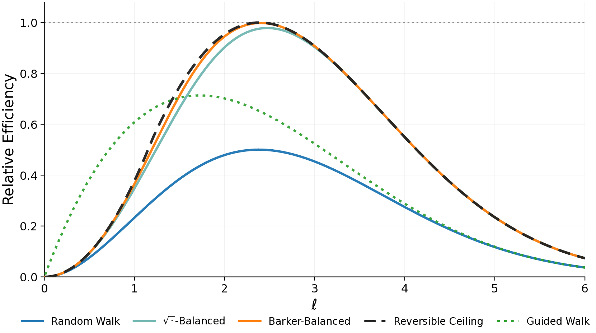
How can we improve?
- draw \(U\sim\mathrm{Unif}(0,1)\)
- if \(U<\min\{1,R_{k,\,k+\color{#1565c0}{\nu}}\}\) then
- \(\color{#1565c0}{k\leftarrow k+\nu}\)
- else
- \(\color{#c62828}{\nu\leftarrow-\nu}\)
- end if
\[ R_{k,j}=\frac{\pi_{\color{blue}{\beta_{j}}}(x)}{\pi_{\color{red}{\beta_k}}(x)}. \]
\(\displaystyle \mathrm{eff}(\ell)=\color{orange}{\ell^2}\left(\color{blue}{a(\ell)}+\frac{\color{green}{d(\ell)}^2}{\color{red}{\rho(\ell)}}\right)\)
- \(\color{green}{d(\ell)}=a(\ell)\) is maximal: momentum direction only.
- \(\color{red}{\rho(\ell)}=1-a(\ell)\): can the flip rate be reduced?
Lazy Guided Walk – The TCV Flip Rule [TCV11; FBDR20]
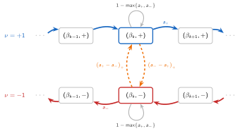
TCV Flip vs Flip Upon Rejection [QRT26+]
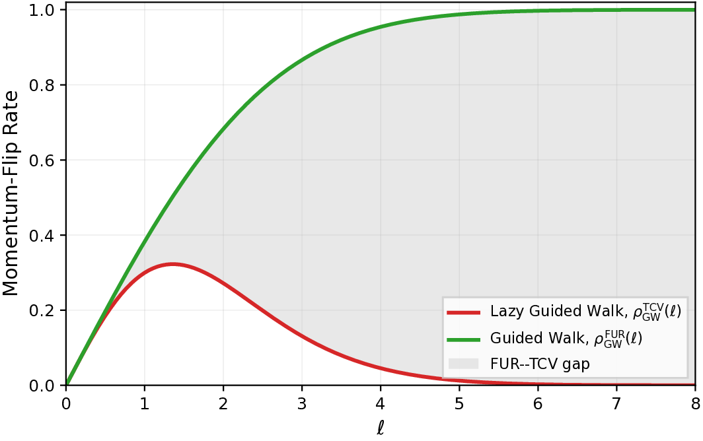
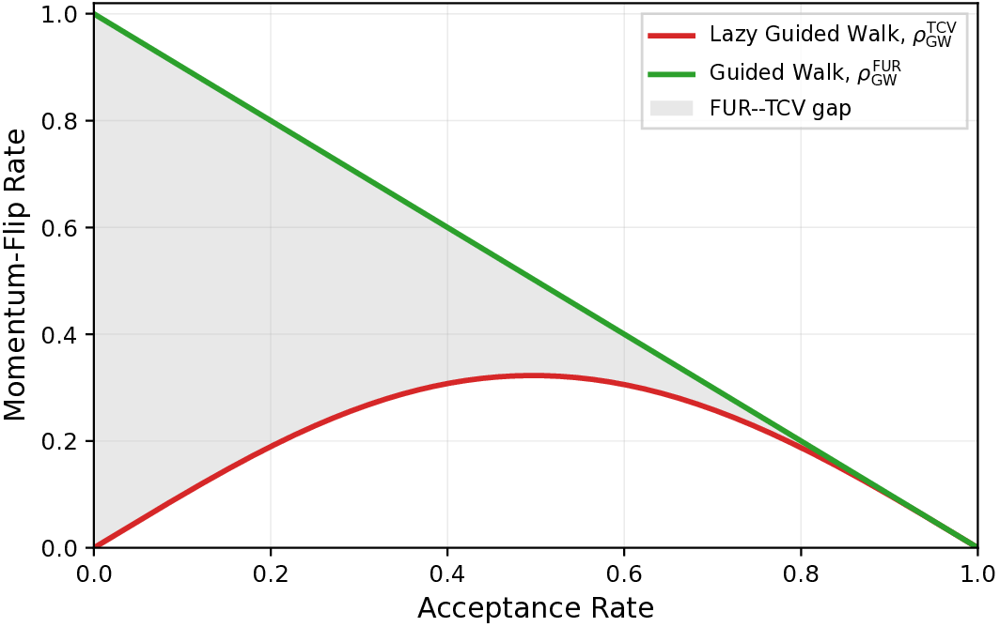
LGW dominates Reversibility
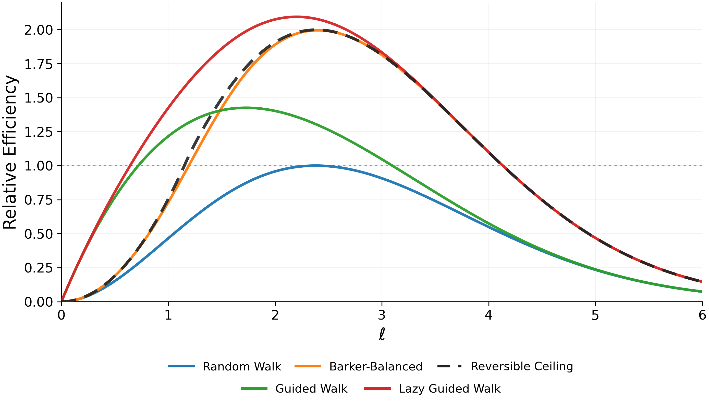
Theorem [QRT26+] : Lazy Guided Walk dominates reversibility for any spacing \(\ell\).
Can we minimize flips further?
- draw a single \(U\sim\mathrm{Unif}(0,1)\)
- if \(U<\min\{1,R_{k,\,k+\color{#1565c0}{\nu}}\}\) then
- \(\color{#1565c0}{k\leftarrow k+\nu}\)
- else if \(U<\min\{1,R_{k,\,k-\color{#1565c0}{\nu}}\}\) then
- \(\color{#c62828}{\nu\leftarrow-\nu}\)
- else
- \(\color{#2e7d32}{\text{stay and keep }\nu}\) ▷ lazy step
- end if
\(\displaystyle \mathrm{eff}(\ell)=\color{orange}{\ell^2}\left(\color{blue}{a(\ell)}+\frac{\color{green}{d(\ell)}^2}{\color{red}{\rho(\ell)}}\right)\)
- Drift: backward moves possible.
- Flips: stronger persistence.
- Acceptance: higher acceptance if the with-momentum transition stays intact.
Can we trade a little drift for substantially more persistence?
Yielding Guided Walk [QRT26+]
Allow a backward, opposite-momentum proposal with probability
\[ q^-= \frac{1}{\pi_k} \left[ \min\{\pi_k,\color{#c62828}{\pi_{k-1}}\}-\max\{\color{#1565c0}{\pi_{k+1}},\color{#8a8a99}{\pi_{k-2}}\} \right]_+, \qquad \pi_j := \pi(\beta_j \mid x) \]
Yielding Guided Walk [QRT26+]
\[ q^-= \frac{1}{\pi_k} \left[ \min\{\pi_k,\color{#c62828}{\pi_{k-1}}\}-\max\{\color{#1565c0}{\pi_{k+1}},\color{#8a8a99}{\pi_{k-2}}\} \right]_+, \qquad \pi_j := \pi(\beta_j \mid x) \]
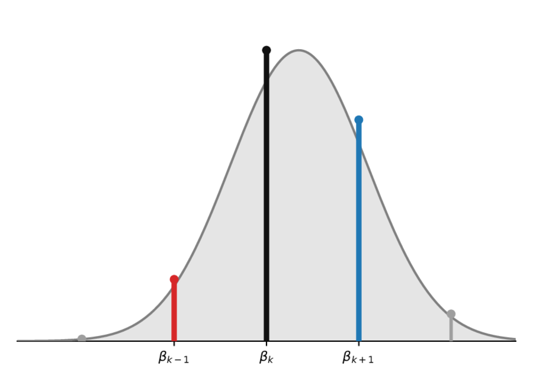
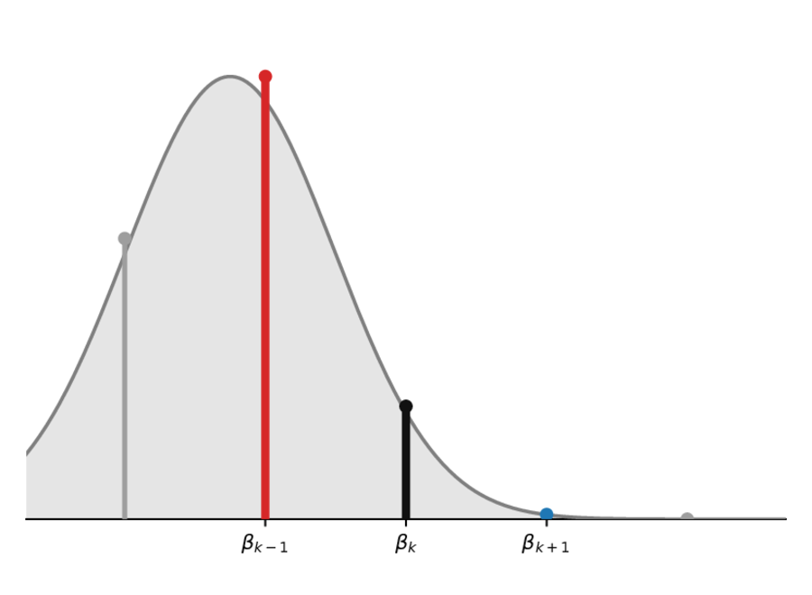
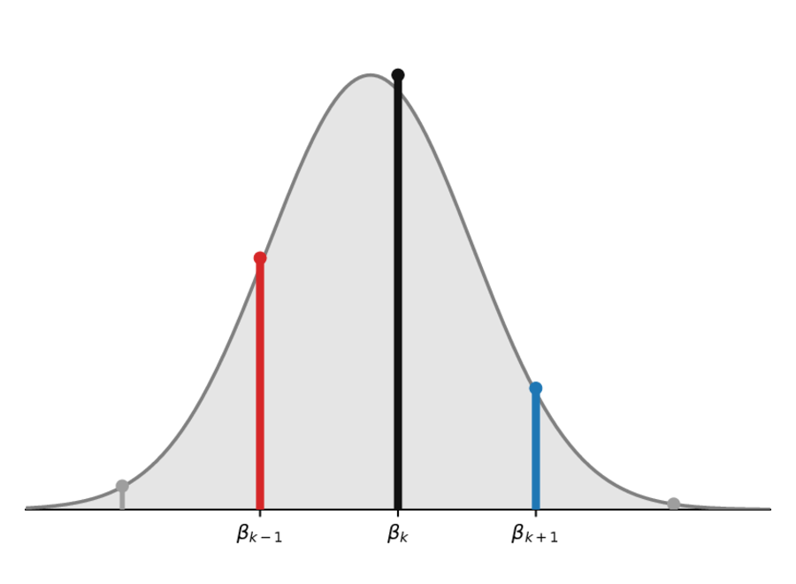
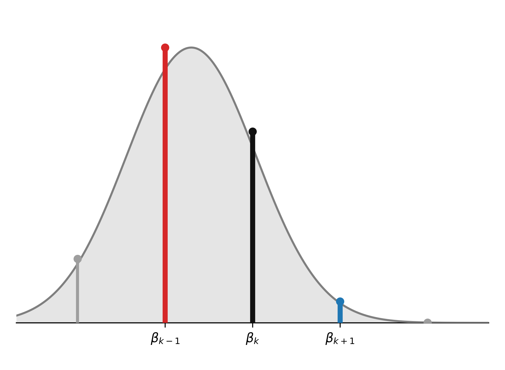
Relative Efficiency
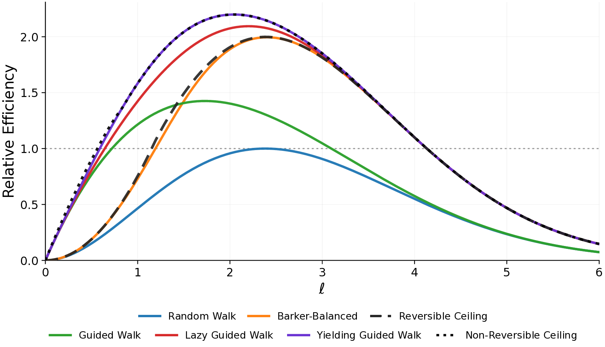
Theorem [QRT26+] : Yielding Guided Walk achieves optimal efficiency in its optimal regime.
Asymptotic Transition Kernels
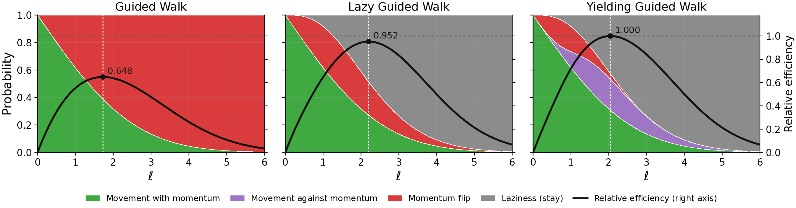
Summary Table of Efficiencies

Summary table comparing optimal efficiency for each method.
Empirical Results
Toy Multivariate Gaussian [BCB25]
A Gaussian prior and likelihood keep the tempered target Gaussian at every level:
\[ \pi_0=\mathrm N(0,\sigma_0^2 I),\qquad \ell(x)\propto e^{-\|x-m\|^2/2} \;\;\Longrightarrow\;\; \pi^{(\beta)}=\mathrm N\!\big(\mu_\beta\,\mathbf 1,\; \sigma_\beta^2 I\big), \]
\[ \sigma_\beta^2=\big(\beta+\sigma_0^{-2}\big)^{-1}, \qquad \mu_\beta=\beta\,m\,\sigma_\beta^2 . \]
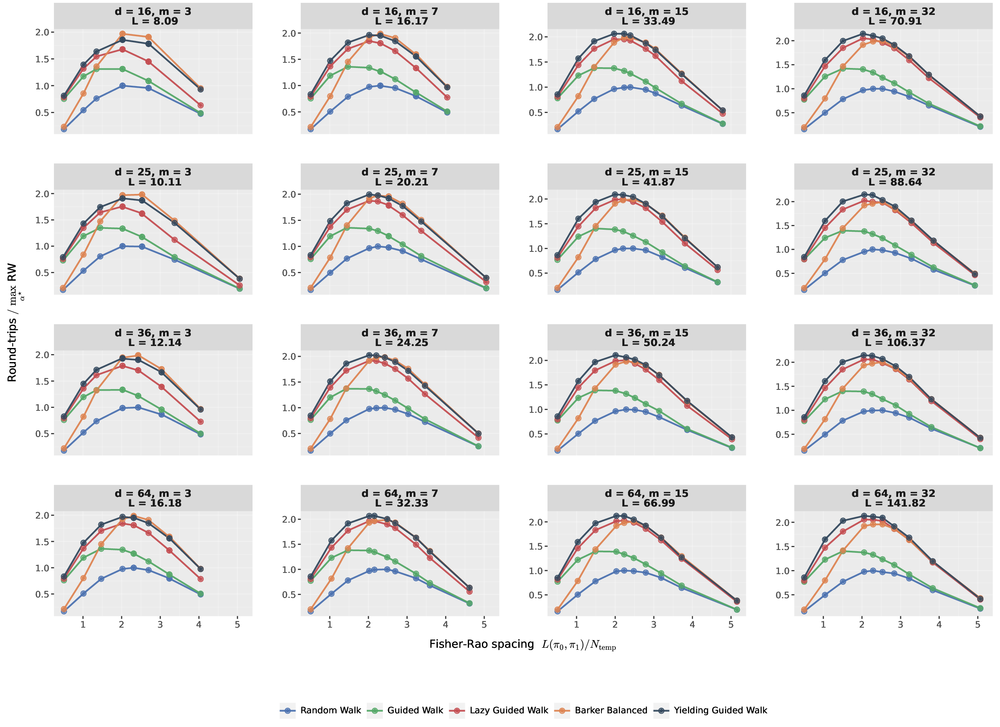
Running Example : Bimodal Gaussian

Running Example : Bimodal Gaussian
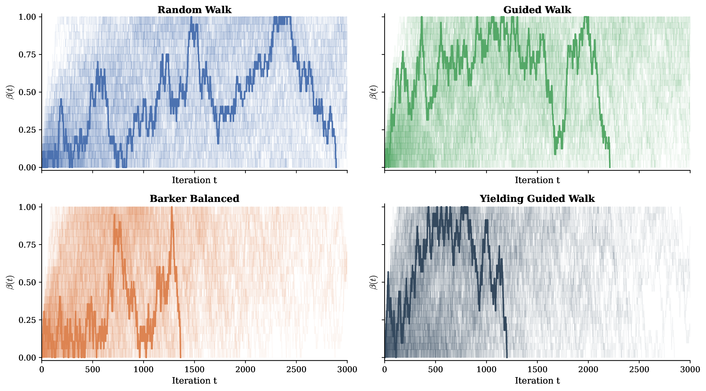
Toy multivariate Gaussian with AR(1)
To model an imperfect within-temperature move, replace the exact refresh by a single AR(1) step with correlation \(\rho\):
\[ X^{(t+1)} = \mu(\beta^{(t)}) + \rho\big( X^{(t)} - \mu(\beta^{(t)}) \big) + \sigma(\beta^{(t)})\sqrt{1-\rho^2}\,\mathbf{Z}^{(t+1)}, \qquad \mathbf{Z}^{(t+1)} \sim \mathrm N(0,I). \]

Takeaways & Further Work
Takeaways
- Reversible temperature kernels hit an efficiency ceiling — closely approached by informed proposals (Barker, \(\sqrt{\cdot}\)-balanced).
- Naive non-reversibility (plain Guided Walk) is dominated by the best reversible kernels.
- Cutting the flip rate — Lazy Guided Walk — beats every reversible method.
- Allowing an opposite-momentum move — Yielding Guided Walk — is optimal among nearest-neighbour skew-MH temperature kernels.
Simulated Tempering mixing stays inherently bounded.
Future Work — Diagonal Moves

Illustration motivating diagonal temperature-state moves, Grenioux & Noble, 2026.
Future Work — Reference Distributions and Paths
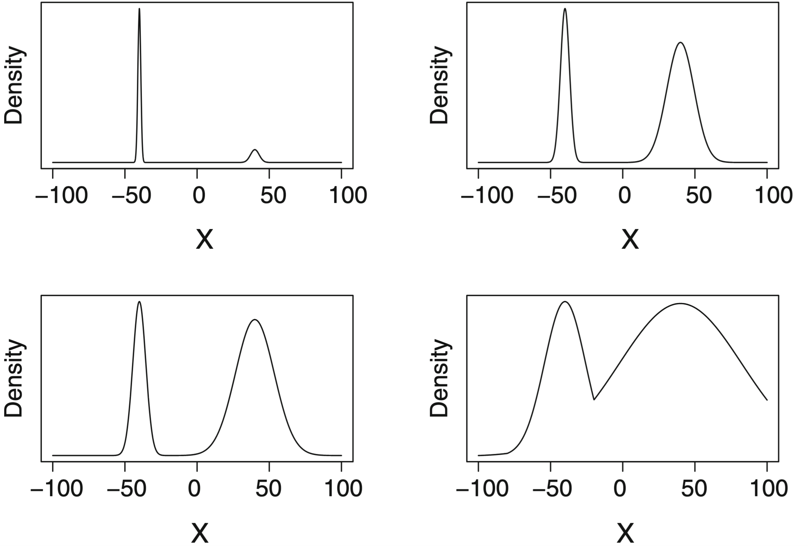
Weight degeneracy in Tempering, Tawn et. al, 2019.
References
Appendix
Optimal Regimes
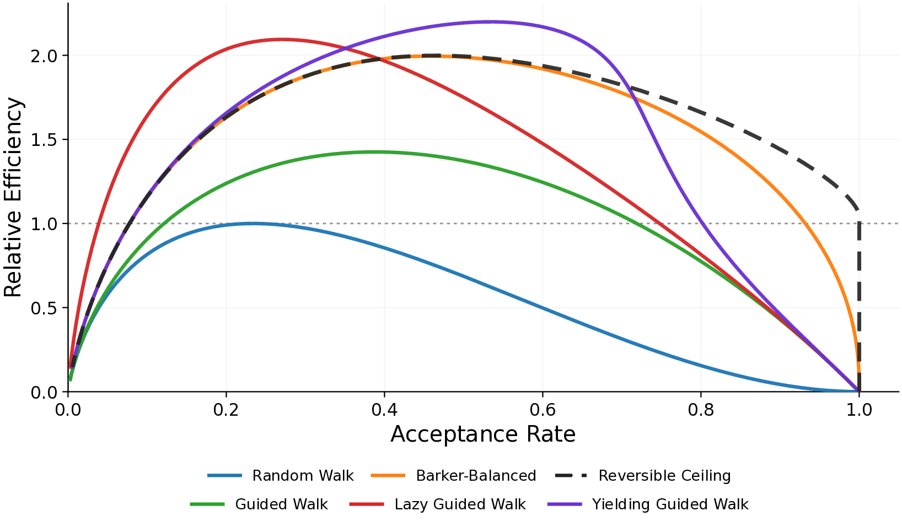
Scaled efficiency versus acceptance across the principal methods.
Comparison
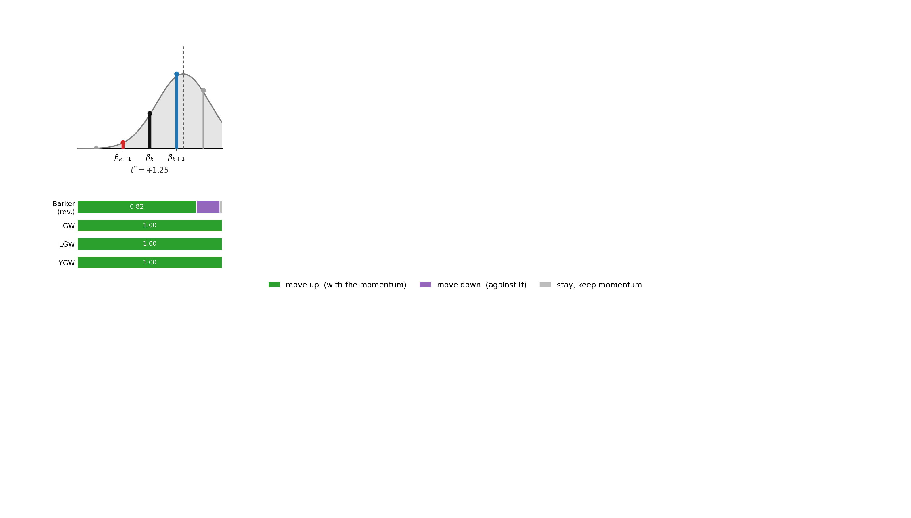
First stage of the comparison of transition outcomes.
Comparison
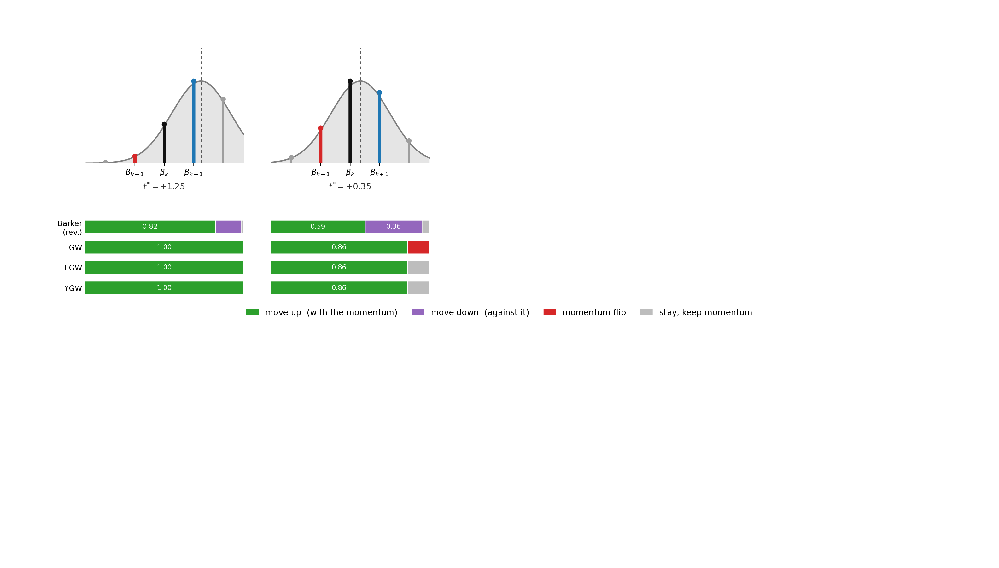
Second stage of the comparison of transition outcomes.
Comparison
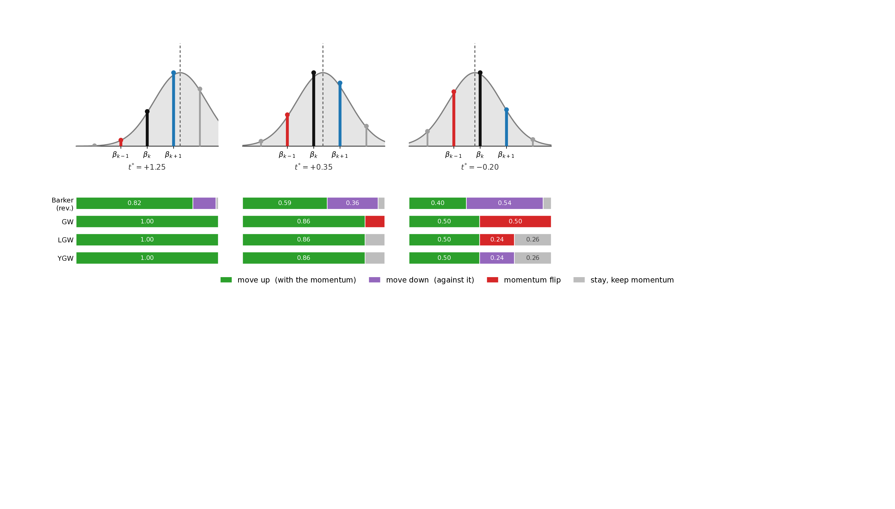
Third stage of the comparison of transition outcomes.
Comparison
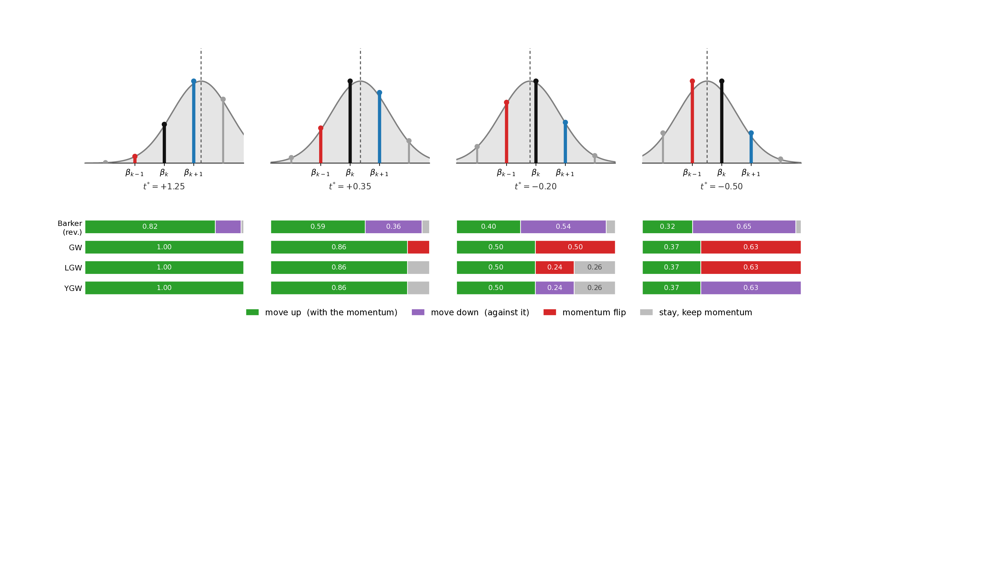
Fourth stage of the comparison of transition outcomes.
Comparison
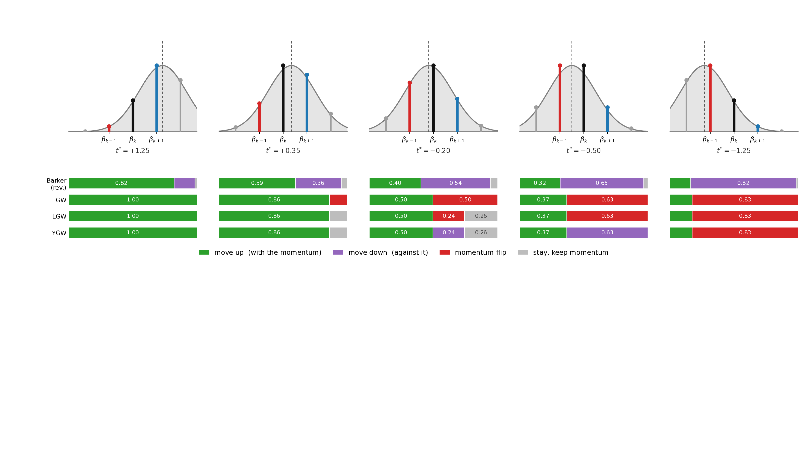
Fifth stage of the comparison of transition outcomes.
Comparison
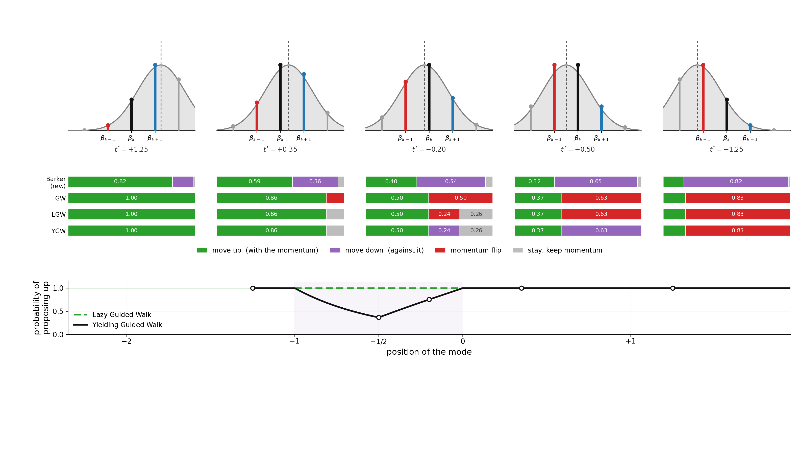
Final stage of the comparison of transition outcomes.
Queniat, Roberts, Tawn (University of Warwick)